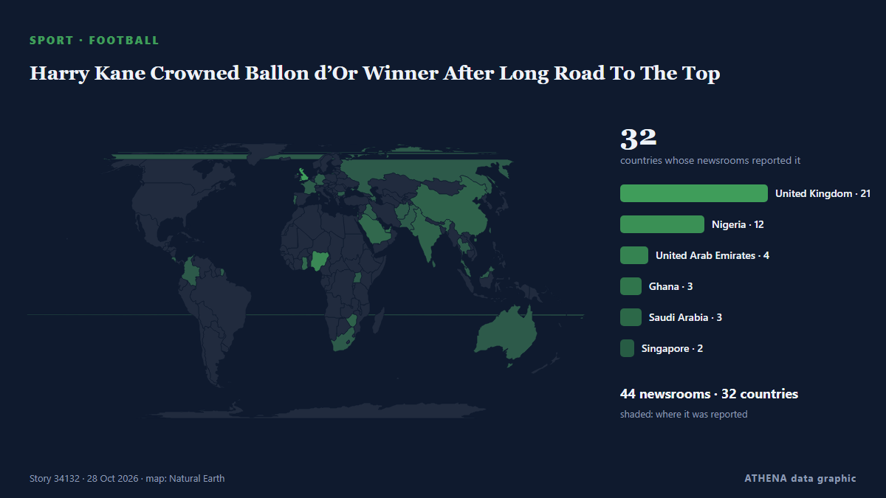

Harry Kane Crowned Ballon d’Or Winner After Long Road To The Top

The couple first encountered each other when they were just four years old at the same primary school. из Evening Standard (London)
Независимые источники: 44 издания в 32 странах, с 26 окт.; первым сообщил Evening Standard (London); освещение идёт на спад. Спорт и культура публикуются без оценки риска. Уверенность — 90 % (высокая); подтверждают независимые источники: 44 издания, средняя надёжность источников — 74 %.
Что изменилось: 17 новых сообщений от 13 редакций за 24 часа до 28 окт..
Первый заголовок: England and Bayern Munich striker Harry Kane wins Ballon d'Or
Заголовки приводятся на английском языке, как они были опубликованы.
Коротко в цифрах
Отобрано, оценено и написано по опубликованной методологии ATHENA. Ни один редактор не вмешивается в отдельные события. Как это создаётся ›
| 26 Oct 15:17 UTC | 2 |
|---|---|
| 26 Oct 17:17 UTC | 0 |
| 26 Oct 19:17 UTC | 2 |
| 26 Oct 21:17 UTC | 9 |
| 26 Oct 23:17 UTC | 14 |
| 27 Oct 01:17 UTC | 3 |
| 27 Oct 03:17 UTC | 1 |
| 27 Oct 05:17 UTC | 8 |
| 27 Oct 07:17 UTC | 8 |
| 27 Oct 09:17 UTC | 5 |
| 27 Oct 11:17 UTC | 7 |
| 27 Oct 13:17 UTC | 5 |
| 27 Oct 15:17 UTC | 3 |
| 27 Oct 17:17 UTC | 1 |
| 27 Oct 19:17 UTC | 0 |
| 27 Oct 21:17 UTC | 1 |
| 27 Oct 23:17 UTC | 0 |
| 28 Oct 01:17 UTC | 0 |
| 28 Oct 03:17 UTC | 0 |
| 28 Oct 05:17 UTC | 0 |
| 28 Oct 07:17 UTC | 1 |
| 28 Oct 09:17 UTC | 1 |
| 28 Oct 11:17 UTC | 3 |
Откуда эти цифры
Значимость
Риск
Уверенность
Освещение — кто сообщил и когда
заголовок в оригинале · открывает источник- Evening Standard (London) · Великобритания · United KingdomWho is Harry Kane's wife? Katie Goodland by Ballon d'Or winner's side at glittering London award ceremony
- Nile Post · Уганда · UgandaKane ends England's 25-year Ballon d'Or wait
- Channels TV · Нигерия · Nigeria2026 Ballon d’Or: Kane Wins Men’s Striker Of The Year Award
- Channels TV · Нигерия · Nigeria[UPDATED] Kane Edges Yamal, Mbappe To Taste Ballon d’Or Glory
- The Irish News (Belfast) · Великобритания · United KingdomHarry Kane wins 2026 men’s Ballon d’Or ahead of Kylian Mbappe and Lamine Yamal
- MyJoyOnline · Гана · GhanaBallon d’Or 2026: Harry Kane wins 2026 Men’s Striker of the Year award
- The Scotsman · Великобритания · United KingdomI am the Scottish juror on the Ballon d'Or panel and here's why I had to vote for nemesis Harry Kane
- DW English · Германия · GermanyEngland and Bayern Munich striker Harry Kane wins Ballon d'Or
- Colombia One · Колумбия · ColombiaHarry Kane Wins the 2026 Ballon d’Or
- Gulf News · ОАЭ · United Arab EmiratesHarry Kane wins 2026 Ballon d'Or, ends England's 25-year wait
- MyJoyOnline · Гана · GhanaBallon D’or 2026: Harry Kane becomes first English man to win award in 25 years
- Evening Standard (London) · Великобритания · United KingdomBallon d'Or: Tottenham react to Harry Kane win as statement released
- CNA (Channel NewsAsia) · Сингапур · SingaporeEngland and Bayern forward Harry Kane wins men's Ballon d'Or
- ABC News Australia · Австралия · AustraliaKane breaks 25-year English drought to claim top football award
- Evening Standard (London) · Великобритания · United KingdomBallon d'Or 2026: Harry Kane thanks Tottenham during emotional acceptance speech
- APA (English) · Азербайджан · AzerbaijanHarry Kane wins 2026 Ballon d'Or
- The Jerusalem Post · Израиль · IsraelEngland, Bayern forward Kane crowned 2026 Ballon d'Or winner
- Evening Standard (London) · Великобритания · United KingdomWhat Harry Kane must do to build on deserved Ballon d'Or triumph
- Times of India · Индия · IndiaHarry Kane wins 2026 Ballon d’Or, becomes 1st player to claim two awards in one night
- Express Tribune · Пакистан · PakistanKane claims men’s Ballon d'Or
- FBC News · Фиджи · FijiKane wins Ballon d’Or
- TASS (English) · Россия · RussiaEngland striker Harry Kane wins Ballon d'Or award
- Evening Standard (London) · Великобритания · United KingdomWembley lit gold to honour Harry Kane as Thomas Tuchel sends Ballon d'Or winner message
- Punch · Нигерия · NigeriaBREAKING: Harry Kane wins 2026 Ballon d’Or
- Free Malaysia Today · Малайзия · MalaysiaBallon d’Or ‘beyond wildest dreams’ but Kane has plenty more to prove
- Al Jazeera English · Катар · QatarHarry Kane wins Ballon d’Or, ending England’s 25-year wait
- The Tico Times · Коста-Рика · Costa RicaHarry Kane Wins the Ballon d’Or, England’s First Winner in 25 Years
- Daily Mirror · Шри-Ланка · Sri LankaKane ends England’s 25-year Ballon d’Or wait - how he bucked the trend
- NewZimbabwe · Зимбабве · ZimbabweHarry Kane becomes first Englishman to win Ballon d’Or in 25 years
- Daily Trust · Нигерия · NigeriaKane wins Ballon D’Or, first Englishman in 25 years
- Cyprus Mail · Кипр · CyprusHarry Kane wins Ballon d’Or after record-breaking season
- SABC News · Южно-Африканская Республика · South AfricaEngland forward Kane crowned Ballon d’Or winner
- Gulf News · ОАЭ · United Arab EmiratesThe numbers behind Harry Kane’s Ballon d’Or winning season
- Gulf News · ОАЭ · United Arab EmiratesVirat Kohli shares heartfelt message to Harry Kane on Ballon d'Or win
- News of Bahrain · Бахрейн · BahrainKane Makes Ballon d’Or History
- Punch · Нигерия · NigeriaBallon d’Or: How Kane won without World Cup, Champions League
- Novinite · Болгария · BulgariaHarry Kane Wins First Ballon d’Or for an Englishman Since 2001
- BBC News · Великобритания · United Kingdom'A dream come true' - Harry Kane on his Ballon d'Or win
- Kurdistan24 (English) · Ирак · IraqKane Eyes Champions League, England Glory After Ballon d'Or Win
- Vanguard · Нигерия · NigeriaBallon d’Or: Harry Kane’s crowning moment